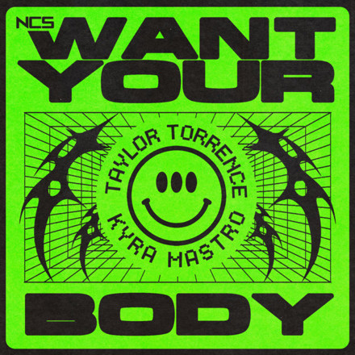

 <!DOCTYPE html>
<html lang="ja">
<head>
  <meta charset="UTF-8" />
  <meta http-equiv="X-UA-Compatible" content="IE=edge" />
  <meta name="viewport" content="width=device-width, initial-scale=1.0" />
  <title>fav music prev...</title>

  <link rel="icon" href="/images/siteicon.ico?v=2" type="image/x-icon" />

  <link rel="stylesheet" href="style.css" />

  <meta property="og:url" content="https://spacer4719.f5.si/" />

  <style>
    :where(:any-link) {
  color: cyan; 
    }

    body {
      background-color: #0a3d62;
      font-family: 'Inter', sans-serif;
      text-align: center;
      padding: 3rem;
    }

    .neon-text {
      color: #00f7ff;
      font-size: 3rem;
      text-shadow:
        0 0 5px #00f7ff,
        0 0 10px #00f7ff,
        0 0 20px #00f7ff,
        0 0 30px #0ff;
      animation: flicker 2s infinite;
    }

    @keyframes flicker {
      0%, 100% { opacity: 1; }
      50% { opacity: 0.85; }
    }

    nav ul {
      list-style: none;
      padding: 0;
      display: flex;
      justify-content: center;
      gap: 1.5rem;
      margin-bottom: 2rem;
    }

    nav a {
      color: #00f7ff;
      text-decoration: none;
      font-weight: bold;
    }

    nav a:hover {
      text-decoration: underline;
    }
  </style>
</head>
</html>
 <nav>
 <ul>
   <ul class="nav-list">
    <li><a href="http://spacer4719.f5.si">HOME</a></li>
    <li><a href="http://spacer4719.f5.si/aboutme">自己紹介</a></li>
    <li><a href="http://spacer4719.f5.si/notifications">お知らせ</a></li>
    <li><a href="http://spacer4719.f5.si/links">他サイト</a></li>
    <li><a href="http://spacer4719.f5.si/blog">ブログ</a></li>
  </ul>
</nav> 
    


<p>これはtestです。</p>
<!-- 例：<h1>ようこそ</h1>の下などに追加 -->
<div style="margin:2rem 0; display: flex; align-items: center; justify-content: center;">
  <div style="background: #002451; border-radius: 12px; box-shadow: 0 0 16px #00f7ff55; padding: 1.5rem; display: flex; align-items: center; gap: 1.5rem; max-width: 400px;">
    
    <div>
      <p style="margin:0 0 0.5rem 0; color:#00f7ff; font-weight:bold;"><a href="https://ncs.io/WantYourBody" target="blank">Taylor Torrence, Kyra Mastro - Want Your Body [NCS Release]</a></p>
      <audio id="preview-audio" controls style="width:180px;">
        <source src="Taylor Torrence, Kyra Mastro - Want Your Body [NCS Release].mp3" type="audio/mpeg">
      </audio>
    </div>
  </div>
</div>
<script>
  // 途中（例：30秒）から15秒だけ再生
  const audio = document.getElementById('preview-audio');
  let previewTimeout;
  const previewStart = 30; // 開始秒数（例：30秒から再生）
  const previewLength = 15; // プレビュー秒数

  audio.addEventListener('play', function() {
    clearTimeout(previewTimeout);
    // 再生開始時に開始位置へジャンプ
    if (Math.abs(audio.currentTime - previewStart) > 0.5) {
      audio.currentTime = previewStart;
    }
    previewTimeout = setTimeout(() => {
      audio.pause();
      audio.currentTime = previewStart;
    }, previewLength * 1000);
  });

  audio.addEventListener('pause', function() {
    clearTimeout(previewTimeout);
  });

  // シークで範囲外に出たら自動停止
  audio.addEventListener('timeupdate', function() {
    if (audio.currentTime > previewStart + previewLength) {
      audio.pause();
      audio.currentTime = previewStart;
    }
  });
</script>


<!-- 例：<h1>ようこそ</h1>の下などに追加 -->
<div style="margin:2rem 0; display: flex; align-items: center; justify-content: center;">
  <div style="background: #002451; border-radius: 12px; box-shadow: 0 0 16px #00f7ff55; padding: 1.5rem; display: flex; align-items: center; gap: 1.5rem; max-width: 400px;">
    
    <div>
      <p style="margin:0 0 0.5rem 0; color:#00f7ff; font-weight:bold;">
        <a href="https://ncs.io/WantYourBody" target="_blank" style="color:#00f7ff;text-decoration:none;">
          Taylor Torrence, Kyra Mastro - Want Your Body [NCS Release]
        </a>
      </p>
    </div>
  </div>
</div>


<!-- 正方形カバーアート＋中央寄せカード -->
<div style="margin:2rem 0; display: flex; align-items: center; justify-content: center;">
  <div style="background: #002451; border-radius: 12px; box-shadow: 0 0 16px #00f7ff55; padding: 1.5rem; display: flex; flex-direction: column; align-items: center; max-width: 200px;">
    
    <p style="margin:0; color:#00f7ff; font-weight:bold; text-align:center;">
      <a href="https://ncs.io/WantYourBody" target="_blank" style="color:#00f7ff;text-decoration:none;">
       
      </a>
    </p>
  </div>
</div>

    


    


    <div style="padding: 10px; margin-bottom: 10px; border: 1px dotted #333333; background-color: #008080;">
     &copy; 2024-2025 spacer4719 / すぺさー。 All rights reserved. <a href="http://spacer4719.f5.si/contact">お問い合わせはこちらから</a>

  <meta property="og:url" content="https://spacer4719.f5.si/"/>
   <link href="style.css" rel="stylesheet"/>
   <link rel="stylesheet" type="text/css" href="style.css" />
